Reporte Maquina CNC y grabado
Reporte Maquina CNC y grabado
(Octubre/09/2026)
Para este trabajo iniciamos en un salón en donde el profesor Oliver nos empezó explicando el nuevo tema el cual era maquina CNC , con esta maquina podíamos hacer diferentes cosas por ejemplo realizar cortes o grabados con diferentes tipos de materiales los cuales pueden ser :
- Acrílico
- Madera
- Espumas
- Yeso
El profesor nos explico que el equipo de seguridad para usar esta maquina debía ser el siguiente: Gafas de protección , Overol o bata , Protección para los oídos y Botas, también nos explico que la maquina no podria cortar en cuadrado ya que es una fresadora y no podría hacer este tipo de cortes , si quisiéramos hacer esto tendríamos que consumir mas material.
Para diseñar una imagen y mandarla a cortar primero tenemos que diseñarla en un programa llamado “NC Viewer” , en este el profesor nos enseño diferentes códigos con los cuales podíamos programar la CNC por ejemplo la velocidad a la que cortaba , la profundidad etc , los códigos eran:
| Comando | Significado |
|---|---|
| G0 | Movimiento rápido |
| G1 | Movimiento lineal controlado |
| G2 | Arco en sentido Horario |
| G3 | Arco en sentido Antihorario |
| G17 | Selecciona plano XY |
| G21 | Trabajar en milímetros |
| G20 | Trabajar en pulgadas |
| G90 | Coordenadas absolutas |
| G91 | Coordenadas incrementales |
| G53 | Cero maquina |
| G54 | Cero de pieza/Sistema de coordenadas |
| X Y Z | Posición de los ejes |
| F | Velocidad de avances |
| S | Velocidad del husillo |
| M3 | Encender husillo horario |
| M4 | Encender husillo antihorario |
| M5 | Apagar husillo |
| M30 | Finalizar programa |
Después de que nos explicara como funcionaba cada cosa el profesor nos pidió que hiciéramos una figura geométrica de nuestra elección solo que no fuera un triangulo , usando las coordenadas de X, Y y Z realice esta figura:
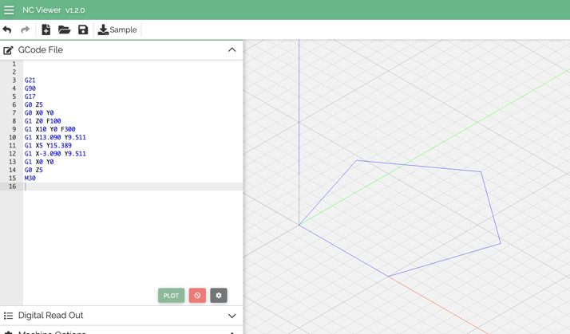
Pentagono en NC Viewer
Grabado en maquina CNC del IDIT
Ah la siguiente clase el profesor nos cito en otro salón ya que solo esas maquinas podían abrir el programa que necesitábamos el cual era “ VCARVE PRO” en este programa podíamos hacer lo mismo que la clase pasada pero ahora en un programa ya establecido, el profesor nos pidió que buscáramos una imagen que nosotros deseáramos y exportarla en un archivo “.DXF” , ya que teníamos nuestro diseño configuramos en base a lo que deseáramos cortar o solo que fuera un grabado
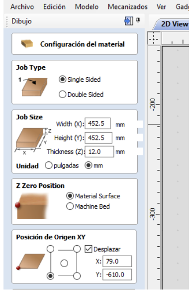
Imagen de referencia sobre las medidas
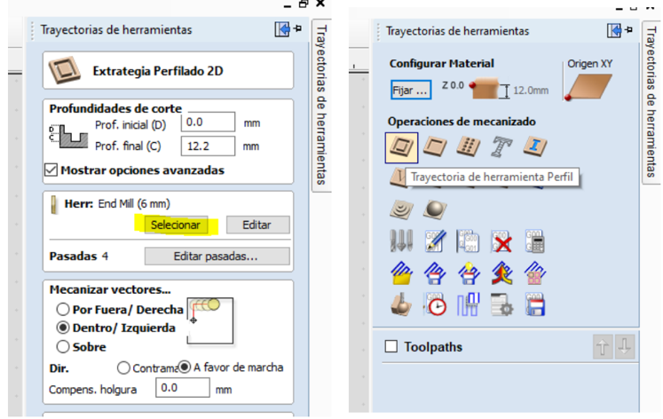
Imagen de referencia sobre las medidas
El profesor tambien nos explico como debíamos de localizar la fresadora para que nuestro diseño quedara a la medida y no se cortara de mas, tambien nos explico que teníamos que dejar una pequeñas cejas en el diseño para que a la hora de cortar la pieza no saliera volando por la fuerza que la fresadora generaba
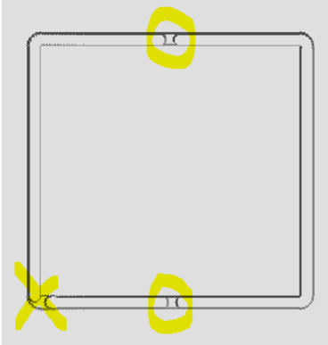
Pequeñas pestañas de soporte
después de verificar todos estos parámetros presionábamos la opción de calcular , la cual nos daba una simulación de como iba a cortar nuestro diseño y en caso de que estuviera mal hacer los cambios necesarios. Ya en la maquina CNC el profesor nos enseño como utilizarla correctamente , entre los puntos que mas destacaban eran el uso de material de protección , ajustar bien el material con el que íbamos a trabajar y configurar correctamente la maquina con un control , con este control podíamos modificar desde donde iba a empezar a cortar la CNC , los movimientos de X , Y y Z y en caso de que hubiera un error poder parar rápidamente la maquina.
Para esta practica utilizamos un unicel color rosa ya que por sus propiedades seria optimo para grabarlo.
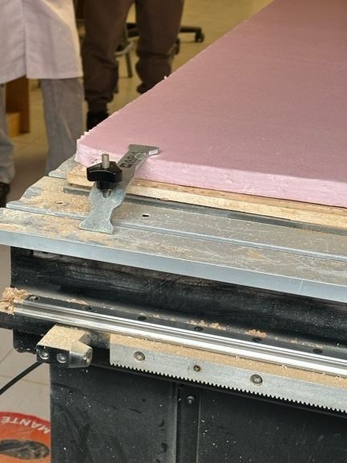
Gancho para asegurar el material a la plancha
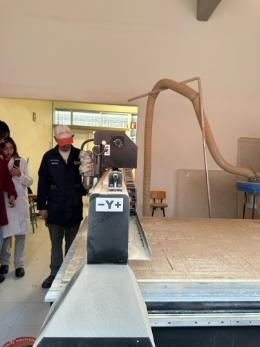
Imagen de la CNC de lado
Días después bajamos con mi equipo ah hacer nuestro propio grabado con una imagen que sacamos de internet , el único cambio fue que estaba ocupada la otra CNC y tuvimos que ocupar la otra maquina , esta tenia una variante la cual era que no contaba con un control para mover la maquina , todo lo tuvimos que hacer desde una computadora que la maquina tenia.
después de acabar limpiamos todo el lugar para que las pequeñas partes que salían volando no afectaran al funcionamiento de la maquina y dejar limpio el lugar así como lo encontramos.
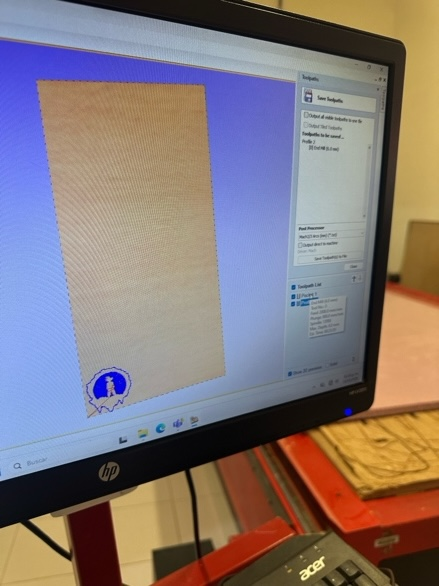
Imagen de colocación en el sistema
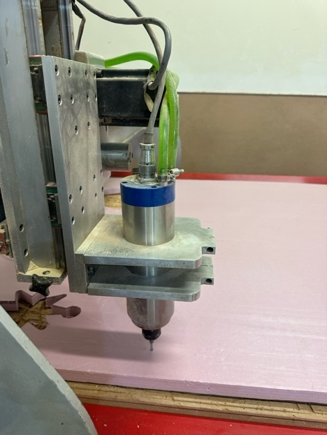
Imagen de la fresadora empezando a cortar
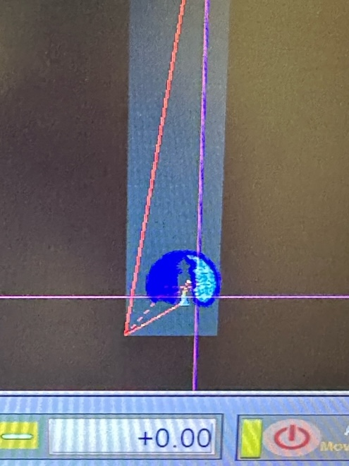
Imagen de proceso de grabado
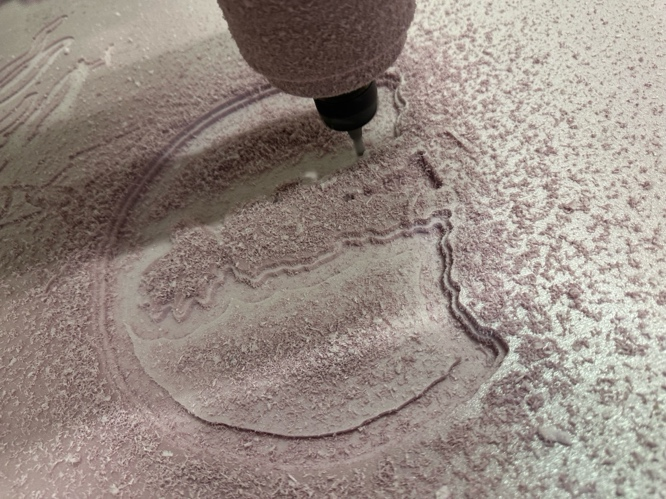
Imagen del proceso de grabado
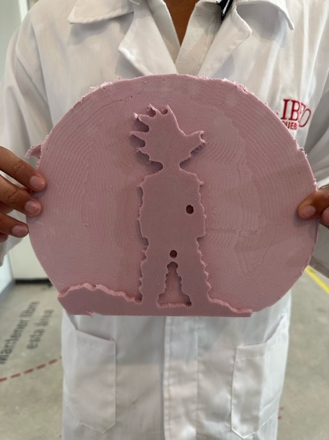
Diseño ya acabado
Conclusion
En este trabajo aprendí varias cosas , el uso de una Maquina CNC y el como funciona , las cosas que tengo que saber para que no se dañe la maquina y las cosas que podríamos hacer con estos conocimiento, también aprendí a programarlo desde cero sin necesidad de un programa externo , esta practica estuvo extensa pero me gusto bastante el saber como funcionan este tipo de maquinas.